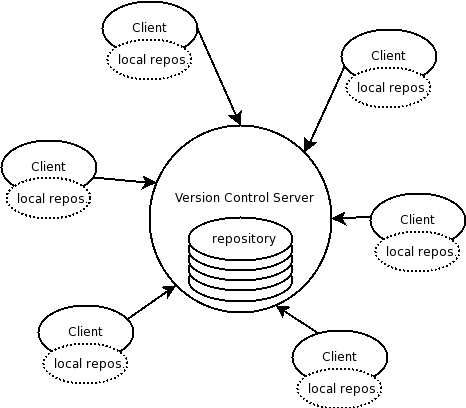
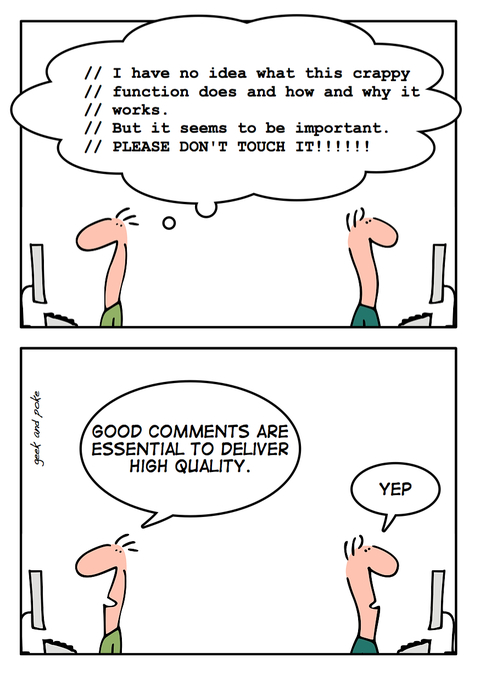

|
|
|
|
|  |
Уже давно разработчики используют такие системы. Но у нас по-прежнему остаётся не мало людей, которые считают, что это для только для программистов, причём для тех, кто пишет не мелкие утилитки, плагины, программки, а тех, кто пишет большие программные пакеты типа Maya. А нередко вообще о таких системах ничего не знают, пишут плагины и прочие тулзы, а программистами себя не считают.
А вы знаете, что многие крупные фирмы у "них" уже используют систему контроля версий не только для хранения текстов программ, но и для CG проектов: хранят текстуры, модели и т.п. Так что скорее всего и мы к этому придём. И вы уже по-любому, рано или поздно столкнётесь с такой системой.
Основная идея таких систем состоит в способе доступа к файлам. Вы у сервера запрашиваете файл или папку. Она скачивается, и вы работаете с файлами локально. А после работы вы просто апдейтите эту папку на сервере. Кто-то другой может после этого попросить проапдейтить свою папку. Ему уже зальются только сделанные вами изменения.
Плюсы такой системы:
Я бы даже советовал пользоваться такой системой если вы пишете что-то один, и точно будете всё время один работать над этим проектом. Никто ни разу не сталкивался, что на одном компе вы поправили одни файлик на другом другой (а ещё хуже если тот же, но в другом месте), и вам приходится всё это помнить, чтобы не переписать в одно место сразу весь проект и не забыть про изменения. В случае работы с системой контроля версий это исключено.
А уж когда на проекте есть несколько программистов, которые могут работать в разных местах - тут уже давно прочно используется контроль версий. Не будет же каждый всех предупреждать где и что он поменял, чтобы никто это не перезатёр.
Пользоваться такими системами просто. Когда привыкните, поймёте что это гораздо быстрее чем просто переписать, особенно если с ftp. Элементарно меньше надо совершить действий. И вы никогда ничего не потеряете в случае ошибки.
Как перевести CG проекты на систему контроля версий, я сказать не могу. У "нас" о таком опыте я ещё не слышал. Это пока только у "них" да и то только в крупных фирмах, где десятки разработчиков.
А вот перевести ваши "тулзы": скрипты, плагины, программы - запросто. Для этого более чем достаточно поставить бесплатное готовое решение, типа Subversion.
Исходный код Афанасия храниться в Subversion на сайте SourceForge. Этот сайт предоставляет бесплатно такие услуги размещая на своих страницах рекламу. Он предоставляет проекту сайт + php, ftp, svn, cvs, rsync, всевозможные статистики, траффик, посещения и вообще по-моему всё может понадобиться IT-проекту. Хочу обратить внимание, что сторонняя реклама не на ваших страницах, и уж тем более не в вашем проекте, а только на страницах самого сайта SourceForge. И она, кстати, тематическая, так что может и что-то полезное найдёте. Это один из крупнейших таких серверов. Посмотрите сколько там всяких проектов. Может вы найдёте что-то интересное. А может заметите, что какая-нить бесплатная тулза, которой вы во всю пользуетесь тоже хранит исходники там (если вы работаете под Linux, то это точно так).
|  |
Не забудьте про хорошие комментарии. Они бывают очень полезны даже если вы пишете что-то один.

|
|

|